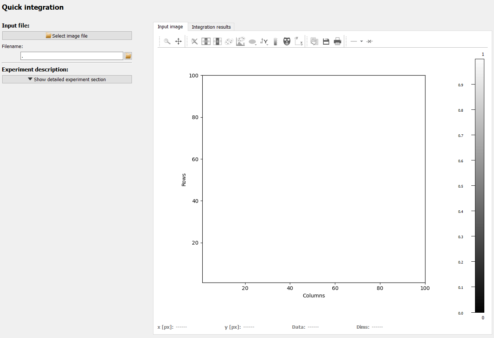
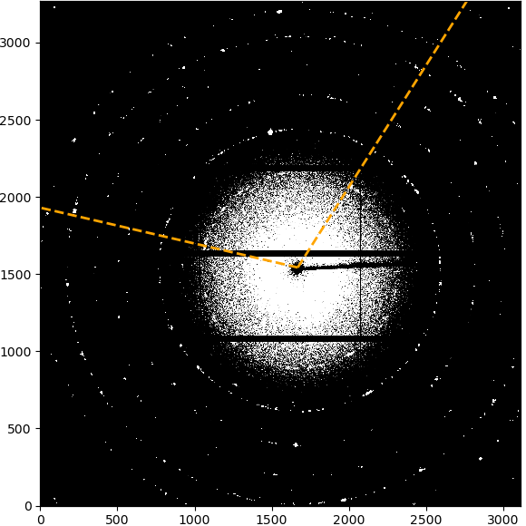
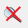
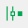
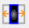

Quick Integration frame#
The Quick integration frame allows to perform a quick integration without
needing to set up the full DiffractionExperimentContext and
ScanContext.
The frame does, however, have some limitations: Processing is limited to data loading and integrating (azimuthal, radial or 2-dimensional) and the detector is assumed to be perfectly aligned, i.e. all rotations are set to zero.
The left side shows the configuration and most configuration options will become available once an image has been imported. The right side holds two plots for input image and integration results in tabs.
The configuration on the left holds the following functions which will be described in more detail below:
Input selection
Experiment description
Beamcenter
Integration region of interest
Run the integration
Input selection#
The input file can be selected in any one of four ways:

Use the “Select image file” button at the top.
Enter the full file path in the input field.
Use the small “open” button right of the input field.
Drag and drop a file from the system’s file explorer.

If the filename is valid, the selected file will be displayed immediately.
For hdf5 files, however, you need to select data the dataset and frame number first and confirm the selection with the “Confirm input selection” button before any frame is loaded and displayed.
After loading an image, the current integration region is shown as an overlay. By default,the overlay is orange and will cover the full image (because the full detector is used by default).
Experiment description#

The detailed experiment description is hidden upon startup. Default values for the detector pixel size, detector distance and X-ray energy allow to run any integration right away without needing to modify any values. The only Parameter displayed directly is the detector model. If the shape of the input image corresponds to a known detector, the choices are updated correspondingly. Choosing the correct detector model allows pyFAI to use the generic mask for this detector make, for example to mask module gaps.
Note
The integration can be run directly with the defaults but as a result, the scaling of the integration results (i.e. 2theta / Q / r values) are wrong. Nonetheless, the integration profile can be inspected and assessed.
The expanded experiment description section offers the options of importing a full calibration or by manually setting X-ray energy, sample-detector distance and the detector pixel size. Note that square pixels are assumed.
A custom detector mask can be used as well. This will take precedence over the generic detector mask.
Beamcenter#

The beamcenter position (in detector pixel coordinates) can be set directly, if it is known. The position is also updated if the experimental description has been imported.
The “Start graphical beamcenter selection” button will toggle the graphical selection mode. This will show additional control buttons, a panel with a list of selected points and disable other settings. In addition, clicking in the image will select the clicked pixel positions and store them in the list.

The image above shows the initial view after enabling the graphical beamcenter selection. The additional control buttons and center panel with the point list are described in detail below.
Image display#
The image display is a PydidasPlot2d with all the functionality described in the linked description. In addition, clicking with the left mouse buttons allows to store the selected positions. Points are visualized by different symbols, as explained below.
point symbol |
description |
|---|---|
A generic x marker to signal that this point has been stored. |
|
Selected points are highlighted with a filled circle. |
|
The beamcenter is marker with a diamond-shaped marker. |
Point list and controls#
Located at the top are controls for how to select points and for the overlay color.
The Use 2 click point selection toggles how points are selected in the image:
Disabled 2-click point selection:
If disabled, points will be selected directly with a single click in the image. This requires the user to manually zoom in to select points with high accuracy.
Enabled 2-click point selection:
When enabled, clicking on a point in the image will zoom in on the selected point to allow a higher degree of precision for the point selection. The second click will select the point and reset the zoom to the previous settings.
The second item is a configuration widget to change the color of all the plot overlay items like the points to increase the contrast, depending on the chosen colormap for the image. Changing the color in the drop-down selection will automatically update the color in all overlay items.
The point list displays the positions of all clicked points. Left-clicking on
a point in the list will select this point and also highlight it in the image
by changing the marker. Multiple points can be selected by holding
Shift when selecting the second point to select all points inbetween
or by holding Ctrl while selecting points to add only single points
to the selection. All selected points will be highlighted in the image.
The two buttons at the bottom of the point list allow to delete the current
selection of points or all points. The current selection of points can also be
deleted by pressing Del while the plot list has the focus.
Integration region of interest#

The integration region of interest can be selected either by entering values for the radial and azimuthal range or graphically after clicking the “Select radial / azimuthal integration range in image” button.
Selecting radial integration range in image#
If the azimuthal range is “Full detector”, nothing will be displayed to start with. If a range has been selected, the limits of the range will be marked by two lines starting from the beamcenter. Clicking on the first point will set the inner radial limit, which will be displayed as a circle. Clicking a second time will set the upper limit and the selected integration ROI will be displayed as overlay.
|  | 
|
|
|---|---|---|
The starting azimuthal limits without any radial selection. |
After selecting the inner radial limit, it is shown as a circle. |
After selecting the outer radial limit as well, the final integration ROI is displayed. |
Selecting azimuthal integration range in image#
If the radial range is “Full detector”, nothing will be displayed to start with. If a range has been selected, the limits of the range will be marked by two circles around the beamcenter. Clicking on the first point will set the starting radial limit and draw a line from the beamcenter. Clicking a second time will set the upper limit and the selected integration ROI will be displayed as overlay.


{kind=link}
{kind=link}
{kind=link}
Run the integration#

To run, the integration, select the corresponding direction and number of points from the list and click the button to run. The results will be displayed in the second plot tab, labeled Integration results.
Data visualization#
Two separate plots for input and integration results are organized as tabs on the right side of the frame.
The modified silx Plot1D and Plot2D widgets are used for displaying the data and the are described in detail below.
Pydidas 1D plot#
The PydidasPlot1d is a
subclassed silx Plot1d
with additional features useful in pydidas.
{kind=link}
- The menu
The menu bar allows access to all generic silx and additional pydidas functionality. The detailed menu icons and actions are described below in the menu entries description.
- The plot display
This plot shows the data. Depending on the zoom level, this is either the full image or a sub-region.
- The position information
This widget displays the coordinates and data values of the data under the mouse cursor.
menu entries description#
menu icon |
description |
|---|---|

|
Zoom mode: clicking with the mouse and dragging spans a new selection of the data to be visualized. |

|
Panning mode: clicking with the mouse and dragging moves the data on the canvas. |
|  | Unzoom: Reset the display region to the full data. |

|
Activate autoscaling of the x-axis. If enabled, the x-axis will be matched to the data range upon activation or upon using the “Unzoom” button. |

|
Activate autoscaling of the y-axis. If enabled, the y-axis will be matched to the data range upon activation or upon using the “Unzoom” button. |

|
Switch between a linear and a logarithmic x-axis. |

|
Switch between a linear and a logarithmic y-axis. |

|
Toggle a grid in the main plotting canvas. |
|  | Change the drawing style. Repeatedly using this button will cycle through lines, dots, and lines & dots styles for the curve. |

|
Copy the currently visible figure to the clipboard. |

|
Save the currently loaded full data to file, ignoring any zooming. This function will open a dialogue to select the file type and filename. Depending on the selected file type, the colormap and scaling will be retained (e.g. for png export) or ignored (e.g. tiff export). |

|
Print the currently visible figure. This will print the current canvas (and therefore only the data visible on the canvas). |
Pydidas 2D plot#
The PydidasPlot2d is a
subclassed silx Plot2d
with additional features useful in pydidas.

- The menu
The menu bar allows access to all generic silx and additional pydidas functionality. The detailed menu icons and actions are described below in the menu entries description.
- The image display
This widget shows the image data. Depending on the zoom level, this is either the full image or a sub-region.
- The colorbar
The colorbar shows the reference for the used colormap to map data levels to colors.
- The position information
This widget displays the coordinates and data values of the data under the mouse cursor.
Two-dimensional plots are presented in a silx Plot2D widget. The toolbar options will be explained in detail below. Moving the mouse over the canvas will update the labels for x/y position and data value at the bottom of the canvas. Note that the x and y axis positions for each pixel are defined at the pixel center and the given values must be treated carefully with respect to the pixel shape, especially for coarse pixels.
Tip
The scaling of the results can be achieved by modifying the colormap settings.
menu entries description#
menu icon |
description |
|---|---|
|
|
Zoom mode: clicking with the mouse and dragging spans a new selection of the data to be visualized. |
|
|
Panning mode: clicking with the mouse and dragging moves the data on the canvas. |
Unzoom: Reset the display region to the full data. |
|

|
Match canvas: Set the aspect ratio to 1 and match the canvas size to the data to allow a tight fit. |
|  | Expand canvas: Reset the canvas size to take up all available space. This option does also change the data aspect to make use of the full canvas. |

|
Open the colormap editor. This button opens a window with selections for the colormap and scaling of the displayed minimum and maximum values. |

|
Crop histogram outliers: Calculate the histogram of the image and set the colormap to ignore the low x% and the top *y% of the image histogram. The levels of x and y can be adjusted in the pydidas user settings. |

|
Autoscale the colormap to the image mean value +/- 3 standard deviations. |

|
This action allows to control the aspect of the displayed data and allows to stretch the data to fill the available canvas or keep its original aspect ratio. |

|
Control the position of the origin in the image: Select between the top left and bottom left corner. |

|
Display or hide the colorbar on the drawing canvas. |

|
Mask tools: This button opens an additional widget at the bottom of the canvas with tools for importing or setting a mask to mask certain data regions. |

|
Set coordinate system: This button will open a submenu which allows to
select the coordinate system (cartesian or cylindrical). Note that the
cylindrical coordinate system use the global |

|
Get information for selected datapoint: This button will allow the user to click on a point in the image and show a window with additional information about this point (specifically: all indices / data values). |
|
|
Copy the currently visible figure to the clipboard. This will only copy the main figure and not the colorbar. |
|
|
Save the currently loaded full data to file, ignoring any zooming. This function will open a dialogue to select the file type and filename. Depending on the selected file type, the colormap and scaling will be retained (e.g. for png export) or ignored (e.g. tiff export). |
|
|
Print the currently visible figure. This will print only the data visible on the canvas and it will retain colormap and scaling settings. |

|
Create and delete line profiles. This function allows the selection and editing of line profiles. The line profiles are shown in the histograms plots for the vertical and horizontal, respectively. |